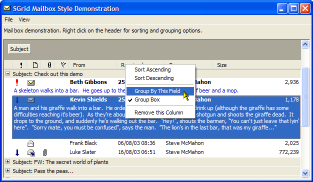
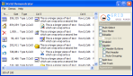
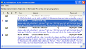
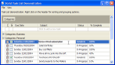
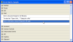
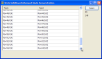

VB5 SGrid 2 Demonstration (144K)
VB5 SGrid 2 Demonstration (144K)
 VB5 SGrid 2 Full Source (446K)
VB5 SGrid 2 Full Source (446K)
 VB5 SGrid 2.0 Binary (194K)
VB5 SGrid 2.0 Binary (194K)
 VB6 SGrid 2 Binary (173K)
VB6 SGrid 2 Binary (173K)
 VB6 SGrid 2 Demonstration (138K)
VB6 SGrid 2 Demonstration (138K)
 VB6 SGrid 2 Full Source (419K)
VB6 SGrid 2 Full Source (419K)
 Bugs: 4 / 5
Bugs: 4 / 5
 Issues: 8 / 8
Issues: 8 / 8
 Questions: 0 / 0
Questions: 0 / 0
 10 Feb 2004
10 Feb 2004
The VB6 Downloads for the Grid contained incorrect files. The versions posted now have the correct files. Please ensure your version of vbalSGrid6.OCX has the file version 2.0.0.40 and accept my apologies for this stupid error.
TaskList demo had a missing line in the mnuColumns event handler which caused a 'Subscript out of Range' error when showing or hiding columns (it was trying to hide/show column 0). Fixed.
 Subclassing Without The Crashes
Subclassing Without The Crashes
 vbAccelerator ImageList Control and Class v2.0
vbAccelerator ImageList Control and Class v2.0

SGrid 2.0
A flexible, feature rich VB Grid with smooth displays and grouping
SGrid 2.0 is an updated version of the popular SGrid control which adds drag-drop hierarchical grouping, owner-draw cells and many other features. It has the same highly-optimised display code but is now further enhanced by much better sort, row insert and delete performance. It remains a great alternative to the ListView in report mode and can now be used to create TaskLists and TreeView-style grouped displays.
About the SGrid 2 Control
SGrid 2 has been released as a new control (filename vbalSGrid.ocx/vbalSGrid6.ocx) because the edit mechanism has changed internally to allow validation and the control no longer acts as a control container. However, most of the internal methods and properties carried forward from the previous version have the same names, meaning applications will normally be able to switch from SGrid 1 to SGrid 2 with minimal alteration. The main change will be to switch instances of the control in your project from the old control to the new one. A tip on achieving this is provided at the end of the article.
About the Demonstrations
There are five demonstration forms provided in the download:
|  | frmDemo Provides an overview of many of the grid's features and allows you to configure the features at run-time. |
|  | frmOutlookDemo Demonstrates creating an Outlook (pre-2003) style interface with configurable columns, sorting, grouping and multi-select. |
|  | frmTaskList Creates an Outlook or VS.NET style TaskList which you can add tasks to, again with configurable columns, sorting, grouping and multi-select. |
|  | frmMatrix Demonstrates how to create a customised grouped view in code without using SGrid's own grouping features. |
|  | frmOnDemand Shows how to use the AddRowsOnDemand feature of the grid. |
For more information on the display features of SGrid, and the differences between SGrid 1 and SGrid 2.0, see the SGrid 2.0 Features article.
SGrid 2.0 Categorised Documentation
This section briefly describes each of the properties, methods and events of the control grouping into categories. Refer also to the demonstration project and the other articles in this section for further description and samples of using these techniques.
The following categories are described:
- Columns
- Rows
- Cells
- Individual Properties and Methods
- The cGridCell object
- State: Edit Cell, Hot Cell and Selections
- Sorting
- Grid Settings and Options
- Events
- Persistence
1. Columns
SGrid is designed to operate with a fixed number of columns. For performance it is always better to add columns prior to adding any rows, making columns invisible if you want to. There are two types of columns:
- Standard Columns
Standard columns appear in the header of the control and render from left to right. These columns may be made invisible, re-ordered and grouped hierarchically.
- Optional Row-Text Column
The row-text column is used to display text and/or icons which stretch across multiple columns in the grid. The Row-Text column renders below the standard columns. If you are using one, the row-text column must always be the last column in the grid. Whether the Row-Text column's text appears will depend upon the height of the row that it appears in.
Note when you use the hierarchical grouping option SGrid internally uses a row-text column to render the group. The Grid will automatically add this if it doesn't exist, but for performance you may want to add one up-front.
Manipulating columns is achieved through the following properties and methods:
- AddColumn - Adds or inserts a new column. For performance, it is best to set up columns before adding any data.
- RemoveColumn - Permanently removes a column from the grid. If all columns are removed, the grid will be cleared. If you want to temporarily remove a column, use the ColumnVisible property.
- Columns - Gets the number of columns in the grid, including hidden and RowText columns.
- ColumnIndex - Gets the index of the column with the specified key.
- ColumnOrder - Gets/sets the order of a column in the control.
- ColumnImage - Gets/sets the image index to show in a column's header. Image indexes are 0 based indexes of the images in an ImageList.
- ColumnImageOnRight - Gets/sets whether images (if any) will be shown on the right or not in a column header.
- ColumnImageOnRight - Gets/sets whether images (if any) will be shown on the right or not in a column header.
- ColumnAlign - Gets/sets the alignment used to draw the column header for a column.
- ColumnIsGrouped - Gets/sets whether the specified column is grouped in the control. Setting to True causes the column to be added to the end of any existing groups.
- ColumnGroupOrder - Gets the order the column appears at in the column grouping. If the column is not grouped, then returns 0.
- ColumnFormatString - Gets/sets a format string used to format all of the text in the column (remember that cell text is stored as a variant). Format strings are the same as those used in the VB Format$ function.
- ColumnFixedWidth - Gets/sets whether the specified column has fixed width or not.
- ColumnHeader - Gets/sets the text to appear in a column header.
- ColumnKey - Gets/sets the key for column.
- ColumnTag - Gets/sets an optional string value to associate with the column.
- ColumnSortType - A convenience property to use to maintain the the current column sort type.
- ColumnSortOrder - A convenience property to use to maintain the the current column sort order.
- ColumnWidth - Gets/sets the width of a column in the grid.
- ColumnIsRowTextColumn - Gets whether this column is the row text column for the grid. The row text column must be the last column in the grid.
- AutoWidthColumn - Automatically resizes a column to accommodate the largest item.
2. Rows
Rows can be added, inserted to the grid, or removed or made invisible. If you can add rows in order, you can choose to have SGrid pre-allocate a number of rows for you, rather than adding each one individually, which can improve performance. To do this, set the Rows property to the number of rows that you want.
There are two types of rows: standard rows and group rows. Group rows appear when you create a hierarchical grouping in the grid, and have the RowIsGroup property set to True. Note you cannot insert grouping rows directly without setting up a grouping using one of the hierarchical grouping methods. Note also that although you can change the properties of grouping rows using things like the RowVisible property, this will in general prevent correct operation of expand and collapse of groups. You should also only add rows to the end of the grid and use the ShiftLastRowToSortLocation method to ensure the correct position of the new row.
- AddRow - Adds or inserts a new row into the grid.
- RemoveRow - Deletes a row from the grid.
- Clear - Clears all rows from the grid, optionally removing the columns too.
- Rows - Gets/sets the number of rows in the grid.
- DefaultRowHeight - Gets/sets the height which will be used as a default for rows in the grid.
- RowIsGroup - Gets whether a row is a hierarchical grouping row.
- RowGroupingState - Gets/sets the state (expanded or collapsed) for a grouping row.
- RowGroupingLevel - Gets the grouping level of the specified row if the row is a group row. The grouping level specifies how far this group row is indented, with level 1 being the first group, 2 being the second and so on.
- RowItemData - Gets/sets a long value associated with a row.
- RowVisible - Gets/sets whether a row is visible in the grid or not. Do not use when groupings are in place.
- AutoHeightRow - Automatically sets the height of a row based on the contents of the cells.
- ShiftLastRowToSortLocation - Moves the last row in the grid to the correct position given the current grouping and/or sorting options.
3. Cells
Cells may either be changed using individual properties or by using a cGridCell object.
3.1 Individual Properties
- CellFormattedText - Gets the text of a cell with any formatting string applicable to the cell's column applied.
- CellText - Gets/sets the text associated with a cell. This property is a variant allowing you to store Numbers and Dates as well. In columns which are not visible, it could also be used to store objects.
- CellTextAlign - Gets/sets the alignment and formatting properties used to draw cell text. The format used is the same as that used by the GDI API call DrawText and hence allows you to specify horizontal and vertical alignment as well as whether the text is single line or wrapped and/or whether the text is truncated.
- CellIndent - Gets/sets the horizontal indentation of a cell from the cell's border.
- CellExtraIcon - Gets/sets the 0-based index of the extra icon for a cell in the ImageList. This icon will always appear in the left-most position for the cell. Set CellExtraIcon to -1 to remove an icon.
- CellItemData - Gets/sets a long value associated with the cell.
- CellSelected - Gets/sets whether a cell is selected or not.
- CellIcon - Gets/sets the 0-based index of the icon for a cell in the ImageList. If the cell has an icon set via the CellExtraIcon property, this icon will appear after it. Set to -1 to remove an icon.
- CellBackColor - Gets/sets the background colour for a cell. Set to -1 to make the cell transparent.
- CellForeColor - Gets/sets the foreground colour to draw a cell in. Set to -1 to use the default foreground colour.
- CellFont - Gets/sets the font to use to draw a cell. Set to Nothing to use the default font.
- CellDetails - Sets multiple format details for a cell at the same time. Quicker than calling the properties individually.
3.2 The cGridCell object
The grid cell object is a disconnected object that represents a single cell. You can either obtain a new cell object to assign to the grid using the NewGridCellFormatObject or obtain one pre-populated with existing cell details using the Cell property. To assign any changes back to the grid, use the Cell property to set it back again. The object itself contains all of the information in the individual cell properties.
4. State: Edit Cell, Hot Cell and Selections
SGrid 2.0 can be editable, track cells with the mouse and select either individual cells or entire rows. These properties and methods allow you to configure these modes and determine information about the current state.
- Editable - Gets/sets whether the grid will be editable (i.e. raise RequestEdit events).
- SingleClickEdit - Gets/sets whether the control immediately goes into edit mode on selection of a cell when in Edit Mode. The default is two-click edit.
- InEditMode - Gets whether the control is currently in Edit Mode.
- EditRow - Returns the index of the row currently being edited, if any.
- EditCol - Returns the index of the column currently being edited, if any.
- StartEdit - Starts editing on the specified cell.
- EndEdit - Request the normal end of an edit operation, if any. This will fire the PreCancelEdit event prior to the CancelEdit event which provides a way to validate the edited data prior to the editing operation being completed.
- CancelEdit - End edit mode without calling the PreCancelEdit event. This will raise the CancelEdit event.
- HotTrack - Gets/sets whether the grid cells are hot tracked with the mouse.
- HotCol - Gets the current Hot column (or 0 if no hot column) when HotTrack = True.
- HotRow - Gets the current hot row (or 0 if no hot row) when HotTrack = True.
- MultiSelect - Gets/sets whether multiple grid cells or rows can be selected or not.
- RowMode - Gets/sets whether whole rows are selected rathert than individual cells.
- SelectionCount - In row mode; gets the number of selected rows in the grid, otherwise gets the number of selected cells in the grid. Useful when the grid has MultiSelect set.
- SelectedRowByIndex - Gets the row of the selected cell or row with the specified 1-based index. See also SelectionCount.
- SelectedColByIndex - Gets the column of the selected cell with the specified 1-based index. See also SelectionCount.
- ClearSelection - Clears the current selection in the control.
5. Sorting
Sorting is configured using SGrid's SortObject. This object maintains details of both the currently hierarchical grouping state and non-grouped sort for any row. You can have any number of columns in the sort, and each one can be configured for the type of data and order you want to sort in. These methods are exposed by the grid for sorting:
- SortObject - Returns a reference to the sort object where grid sorting options can be specified.
- Sort - Sorts the grid data according to the options set up in the SortObject.
The cGridSortObject allows you to configure the sort you wish to apply. For each sort column, you specify the SortColumn, SortOrder and SortType properties. To add a new column to the sort, set the index of the sort item to one greater than the current sort count.
- Clear - Clears all columns from the sort object.
- Count - Gets the number of sorting columns.
- IndexOf - Gets the index of the sort data for the specified column, or zero if no sorting should be applied to the column.
- Remove - Removes the sort data for the specified index.
- ClearNongrouped - Clears only non-grouping sort rows from the sort object.
- SortColumn - Gets/sets the column to sort by for the specified index.
- SortOrder - Gets/sets the order to sort in for the specified index.
- SortType - Gets/sets the sorting type to use for the specified index. Sorting types include numeric, string (case sensitive and insensitive), date (with various accuracy levels), icon, colour, item data, selection and indentation.
- GroupBy - Gets/sets whether the grid data should be grouped by the specified sorting column.
6. Grid Settings and Options
6.1. Image Lists
Up to two image lists can be associated with the control; one for the main grid and one for the header. If you do not define a separate ImageList for the header then the control will assume that the main ImageList should be used.
- ImageList - Sets an ImageList as the source of icons for the control. The ImageList can be either a VB ImageList, a vbAccelerator ImageList or an API hIml handle. If it is a VB Image List, the Image List must have had at least one icon in it before using this property.
- HeaderImageList - Gets/sets an ImageList to associate with the Header control. By default, the ImageList associated with the control is used. Only ComCtl32 compatible ImageLists may be used with the header control (i.e. not MSCOMCTL.OCX).
6.2. Hierarchical Grouping
- AllowGrouping - Gets/sets whether the header shows a grouping box to drag header items into.
- HideGroupingBox - When AllowGrouping is True, Gets/sets whether the drag-drop area for grouping rows is hidden.
- GroupBoxHintText - Gets/sets the hint text shown in the column header grouping box when no column headers are grouped.
6.3. Appearance
- BorderStyle - Gets/sets the border style for the control.
- BackgroundPicture - Gets/sets a picture to be used as the grid's background.
- AlternateRowBackColor - Gets/sets the background colour to use when rendering alternate rows. Set to -1 to use the standard back colour.
- BackColor - Gets/sets the background color of the grid.
- HighlightBackColor - Gets/sets the background colour of highlighted cells. Set to -1 to use the default.
- HighlightForeColor - Gets/sets the foreground colour of highlighted cells. Set to -1 to use the default.
- NoFocusHighlightBackColor - Gets/sets the highlight background colour for cells when the grid is out of focus. Use -1 for the default colour.
- NoFocusHighlightForeColor - Gets/sets the highlight foreground colour for cells when the grid is out of focus. Use -1 for the default colour.
- GroupingAreaBackColor - Gets/sets the colour of the column grouping area.
- GroupingGutterBackColor - Not implemented in this release.
- GroupRowBackColor - Gets/sets the background colour for grouping rows.
- GroupRowForeColor - Gets/sets the foreground colour of the text in grouping rows.
- ForeColor - Gets/sets the foreground color used to draw the control.
- GridLineColor - Gets/sets the colour used to draw grid lines.
- GridFillLineColor - Gets the colour used to draw fill grid lines. Set to -1 to use the default grid line colour.
- Font - Gets/sets the font used by the control.
- GridLines - Gets/sets whether grid-lines are drawn or not.
- NoVerticalGridLines - Gets/sets whether vertical grid lines should be supressed when grid lines are on.
- NoHorizontalGridLines - Gets/sets whether horizontal grid lines should be supressed when grid lines are on.
- GridLineMode - Gets/sets the grid line mode. The mode can either be standard, in which grid lines are only drawn around cells, or fill, in which case the grid lines fill the control.
- DrawFocusRectangle - Gets/sets whether a focus rectangle (dotted line around the selection) will be shown.
- SelectionAlphaBlend - Gets/sets whether the selection colour is alpha-blended with the background colour or not.
- SelectionOutline - Gets/sets whether the selection is outlined or not. DrawFocusRectangle must be False for this to work.
- HighlightSelectedIcons - Gets/sets whether icons in selected cells will be highlighted using the selection colour.
- DisableIcons - Gets/sets whether icons are drawn disabled when the control is disabled.
- ScrollBarStyle - Gets/sets the style in which scroll bars are drawn. Flat or Encarta style scroll bars are only supported in systems with COMCTL32.DLL version 4.72 or higher. This setting is ignored when running XP or above.
- Header - Gets/sets whether the grid's header is visible or not.
- HeaderFlat - Gets/sets whether the header is rendered with a flat style or not. Not recommended when using XP Visual Styles.
- HeaderHeight - Gets/sets the height of the header.
6.4. Behaviour
- SplitRow - Gets/sets the index of the row to split the grid at. Set to 0 for no split.
- SplitSeparatorSize - Gets/sets the height of the separator between rows before SplitRow and rows after.
- StretchLastColumnToFit - Gets/sets whether the last column is stretched to fit when the control is wider than all of the visible columns.
- Redraw - Gets/sets whether the grid is redrawn in response to changes. Set to False whilst setting many properties to increase speed. Setting to True after it has been False forces a re-draw of the control.
- OwnerDrawImpl - Gets/sets the object which implements the IGridCellOwnerDraw interface for this grid, or Nothing if there is no owner draw implementation.
- AddRowsOnDemand - Gets/sets whether the grid is in Virtual Mode (i.e. rows are added as required via the RequestRow and RequestRowData events).
- HeaderDragReOrderColumns - Gets/sets whether the grid's header columns can be dragged around to reorder them.
- HeaderButtons - Gets/sets whether the grid's header has clickable buttons or not.
- HeaderHotTrack - Gets/sets whether the grid's header tracks mouse movements and highlights the header column the mouse is over or not.
6.5. General
- Draw - Draws the control.
- GetVisibleCellRange - Gets the visible cell range in the grid. Cells that are partially displayed are included in the range.
- ColumnHeaderFromPoint - Determines which column header is under the specified mouse point in pixels relative to the control.
- CellFromPoint - Gets the cell which contains the given X,Y coordinates (relative to the grid) in pixels.
- ScrollOffsetX - Gets the current horizontal scroll offset in pixels.
- ScrollOffsetY - Gets the current vertical scroll offset in pixels.
- CellBoundary - Gets the co-ordinates of the bounding rectangle for a cell in the grid, in twips.
- EnsureVisible - Ensures that the specified grid cell is made visible in the control.
- FindSearchMatchRow Finds the first matching row for a given search string.
- EvaluateTextHeight - Determines the ideal height required to display all the cell's text in a cell. This property is only of any use if the Cell's CellTextAlign property allows multiple lines.
- EvaluateTextWidth Determines the ideal width required to fully display text in a cell.
7. Events
- ColumnClick - Raised when the user clicks a column.
- ColumnWidthStartChange - Raised before a column's width is about to be changed.
- ColumnWidthChanging - Raised as a column's width is being changed.
- ColumnWidthChanged - Raised when a column's width has been changed.
- ColumnDividerDblClick - Raised when the divider between two columns is double clicked.
- ColumnOrderChanged - Raised when the order of the columns is changed following a drag-drop operation.
- HeaderRightClick - Raised when the user right clicks on the grid's header.
- SelectionChange - Raised when the user changes the selected cell.
- HotItemChange - Raised when the hot cell or row changes. Only raised when HotTrack is True.
- RequestEdit - Raised when the grid has the Editable property set to True and the user's actions or a call to StartEdit is used to request editingof the current cell.
- PreCancelEdit - Raised when the user has taken an action that will cancel an edit operation or the EndEdit method is called. Allows the edit contents to be validated prior to exiting edit mode.
- CancelEdit - Raised when edit mode is exited.
- KeyDown - Raised when a key is pressed in the control.
- KeyPress - Raised after the KeyDown event when the key press has been converted to an ASCII code.
- KeyUp - Raised when a key is released on the grid.
- MouseDown - Raised when the a mouse button is pressed over the control.
- MouseMove - Raised when the mouse moves over the control, or when the mouse moves anywhere and a mouse button has been pressed over the control.
- MouseUp - Raised when a mouse button is released after having been pressed over the control.
- DblClick - Raised when the user double clicks on the grid.
- ScrollChange - Raised when the grid is scrolled.
- RowGroupingStateChange - Raised when the state of a grouping row is about to change (between collapsed and expanded). Can be used to cancel the state change.
- RequestRow - Raised when a new row is needed and the AddRowsOnDemand property is set to True.
- RequestRowData - Raised after a new row has been added in response to RequestRow when AddRowsOnDemand is set True. Respond by filling in the cells for that row.
8. Persistence
Grid data can be persisted and reloaded very quickly using the SaveGridData and LoadGridData methods. These methods only persist the cell data and row information, so the data must be subsequently re-loaded into a grid with the exact same column structure.
Tip: Upgrading from SGrid 1 to SGrid 2
You can do this in VB as normal by adding the new grid to the Toolbox and then copying the properties of the existing control across. However, you should also find you can do it by editing your project's .VBP and .FRM files in Notepad. For example, in VB5 the old SGrid appears in the .VBP file like this:
Object={017E002E-D7CC-11D2-8E21-44B10AC10000}#15.2#0; vbalGrid.ocxAnd in the .FRM file like this:
Object = "{017E002E-D7CC-11D2-8E21-44B10AC10000}#15.2#0"; "vbalGrid.ocx" Begin VB.Form frmXXXX Begin vbAcceleratorGrid.vbalGrid grd Height = 3255 Left = 60 TabIndex = 0 Top = 60 Width = 4875 _ExtentX = 8599 _ExtentY = 5741 .. etc End End
To move to the new grid, you just need to change the items shown in red. For the VB5 SGrid, the new entries will be:
Object={3D811CB0-6F63-4CA8-BD1E-7858AC6C9A00}#5.6#0; vbalSGrid.ocxObject = "{3D811CB0-6F63-4CA8-BD1E-7858AC6C9A00}#5.6#0"; "vbalSGrid.ocx" Begin VB.Form frmXXXX Begin vbAcceleratorGrid6.vbalGrid grd Height = 3255 Left = 60 TabIndex = 0 Top = 60 Width = 4875 _ExtentX = 8599 _ExtentY = 5741 .. etc End End